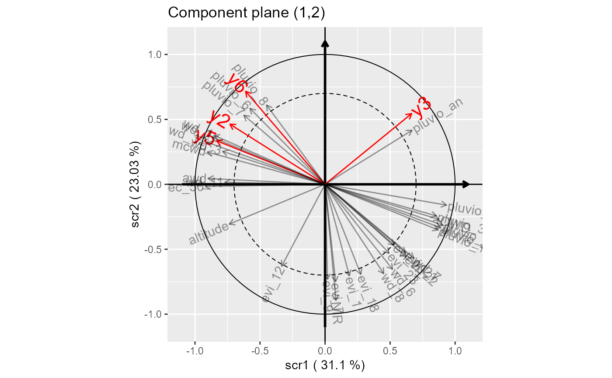

Calculates the components to predict all the response variables.
kCompRand( Y, family, size = NULL, X, AX = NULL, random, loffset = NULL, k, init.sigma = rep(1, ncol(Y)), init.comp = "pca", method = methodSR("vpi", l = 4, s = 1/2, maxiter = 1000, epsilon = 10^-6, bailout = 1000) )
| Y | the matrix of random responses |
|---|---|
| family | a vector of character of the same length as the number of response variables: "bernoulli", "binomial", "poisson" or "gaussian" is allowed. |
| size | describes the number of trials for the binomial dependent variables: a (number of observations * number of binomial response variables) matrix is expected. |
| X | the matrix of the standardised explanatory variables |
| AX | the matrix of the additional explanatory variables |
| random | the vector giving the group of each unit (factor) |
| loffset | a matrix of size (number of observations * number of Poisson response variables) giving the log of the offset associated with each observation |
| k | number of components, default is one |
| init.sigma | a vector giving the initial values of the variance components, default is rep(1, ncol(Y)) |
| init.comp | a character describing how the components (loadings-vectors) are inisialised in the PING algorithm: "pca" or "pls" is allowed |
| method | Regularization criterion type: object of class "method.SCGLR"
built by function |
an object of the SCGLR class.
library(SCGLR) # load sample data data(dataGen) k.opt=4 s.opt=0.1 l.opt=10 withRandom.opt=kCompRand(Y=dataGen$Y, family=rep("poisson", ncol(dataGen$Y)), X=dataGen$X, AX=dataGen$AX, random=dataGen$random, loffset=log(dataGen$offset), k=k.opt, init.sigma = rep(1, ncol(dataGen$Y)), init.comp = "pca", method=methodSR("vpi", l=l.opt, s=s.opt, maxiter=1000, epsilon=10^-6, bailout=1000)) plot(withRandom.opt, pred=TRUE, plane=c(1,2), title="Component plane (1,2)", threshold=0.7, covariates.alpha=0.4, predictors.labels.size=6)